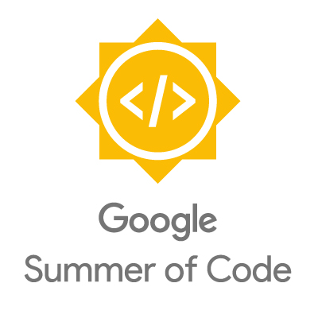

A free/open-source rule-based machine translation system for Crimean Tatar to Turkish
Memduh Gökırmak¹ · Francis M. Tyers² · Jonathan North Washington³
- Univerzita Karlova in Prague
- Indiana University, Высшая Школа Экономики
- Swarthmore College
Overview
- We present a machine translation system that translates from Crimean Tatar to Turkish (crh-tur)
- Rule-based machine translation (RBMT) system:
Yahşı bala balaban bir terekte yuqladı. crh
→ Iyi çocuk büyük bir ağaçta uyudu.tur - Supports crh's two normative orthographies, Cyrillic and Latin:
Яхшы бала балабан бир теректе юкълады. crh
→ Iyi çocuk büyük bir ağaçta uyudu.tur - Free / Open Source (FOSS): https://github.com/apertium/apertium-crh-tur
- Roadmap:
- Context, Background, Motivation
- Methodology and Issues
- Evaluation and Results
- Concluding remarks
Background: Crimean Tatar
Cyrillic: Къырымгъа хош келдинъиз!

Latin: Qırımğa hoş keldiñiz!

- Understudied NW Turkic language
- Influence from Oghuz / SW Turkic
- Forcible resettlement by Soviet government in 1944
- To Central Asia, mostly Uzbekistan
- Hence some influence from SE Turkic (Uzbek)
- 288k speakers have returned to Crimea
- 313k still in diaspora
- Almost all speakers bi- or trilingual
(Russian & language of surrounding community) - Transmission to younger generations in flux
- Two current normative orthographies:
- Cyrillic: based on Russian orthography
- Latin: based on Turkish orthography
- Not particularly similar to (Kazan) Tatar; both NW Turkic
- Kypchak / NW Turkic:
- crh - Crimean Tatar
- uum - Urum
- krc - Karachay/Balqar
- nog - Noghay
- kum - Kumyk
- kaz - Kazakh
- Oghuz / SW Turkic:
- gag - Gagauz
- tur - Turkish
- azj - Northern Azeri
- azb - Southern Azeri
Motivation: Why crh-tur, FOSS, RBMT?
- Crimean-Tatar to Turkish
- Widespread interest in Crimean Tatar (and other Turkic languages) among Turkish speakers (not just academics)
- Crimean Tatar can be difficult to read for Turkish speakers due to morphological and lexical differences
- I.e., useful to community
- FOSS (Free/Open-Source Software):
- Available for anyone to use or modify
- Support from developers
- Robust community (Apertium)
- I.e., accessible to community
- RBMT (Rule-based machine translation)
- No need for large parallel corpora
- Lots of lexical "free rides" between closely related languages
- Not much structural transfer needed btw closely related lgs
- Easy to fix identifiable problems, expand coverage
- I.e., community-maintainable
Background: Prior work
- Existing FOSS Turkic language technology:
- morphological transducers with good (≥90%) coverage: Crimean Tatar, Kyrgyz, Kazakh, Tatar, Kumyk, Turkish, Tuvan, Sakha
- MT systems: Kazakh-Tatar (published), Kazakh-Turkish (published), Turkish-Kyrgyz, Azeri-Turkish, Tatar-Bashqort, Kazakh-Karakalpak, Kazakh-Kyrgyz, Uzbek-Karakalpak, Uyghur-Turkish, ...
- Other reported MT systems (not available to public)
- Turkish-Crimean Tatar, Turkish-Azerbaijani, Turkish-Tatar, Turkish-Turkmen
System architecture
- Standard Apertium RBMT pipeline
System architecture: example
- input:
yahşı vaqıt edi - morphological analysis: ^yahşı/yahşı
adj /yahşıadj subst nom /yahşıadj +ecop aor p3 sg /yahşıadj subst nom +ecop aor p3 sg $ ^vaqıt/vaqıtn nom /vaqıtn attr /vaqıtn nom +ecop aor p3 sg $ ^edi/ecop ifi p3 sg /evaux ifi p3 sg $^./.sent $ - disambiguation: ^yahşı/yahşı
adj $ ^vaqıt/vaqıtn nom $ ^edi/ecop ifi p3 sg $^./.sent $ - lexical transfer: ^yahşı
adj /iyiadj $ ^vaqıtn nom /vakitn nom /süren nom $ ^ecop ifi p3 sg /icop ifi p3 sg $^.sent /.sent $ - lexical selection:
- structural transfer: ^iyi
adj $ ^vakitn nom +icop ifi p3 sg $ - morphological generation:
iyi vakitti
^yahşıadj /iyiadj $ ^vaqıtn nom /vakitn nom $ ^ecop ifi p3 sg /icop ifi p3 sg $^.sent /.sent $
Morphological analysis and disambiguation
- Morphological analysis: HFST
- lexc for morphotactics
- twol for morphophonology
- Crimean Tatar: 13,054 stems (~6K Nouns, ~1K Verbs)
- Turkish: 17,221 stems (~8.5K Nouns, ~2K Verbs)
- Disambiguation: vislcg3
- Crimean Tatar
- analyser outputs: ~2.13 analyses per form
- disambiguator reduces to ~1.18 analyses per form
- Turkish
- analyser outputs: ~2.90 analyses per form
- disambiguator reduces to ~1.46 analyses per form
- Form selected from remaining ~randomly
- Incorrectly chosen form often transfers correctly
Tyers, Francis M., Jonathan Washington , Darya Kavitskaya, Memduh Gökırmak, Nick Howell, and Remziye Berberova (2019). “A biscriptual morphological transducer for Crimean Tatar”. In: Proceedings of the Third Workshop on Computational Methods for Endangered Languages (ComputEL-3).
Lexical selection: example
vaqıt crh →vakit tur time bir vaqıt crh →bir süre tur (for) some time
Lexical transfer:
<e><p><l>vaqıt<s n="n"/></l><r>vakit<s n="n"/></r></p></e>
<e><p><l>vaqıt<s n="n"/></l><r>süre<s n="n"/></r></p></e>
<e><p><l>vaqıt<s n="n"/></l><r>süre<s n="n"/></r></p></e>
Lexical selection:
<rule weight="1.2">
<match lemma="bir"/>
<match lemma="vaqıt" tags="n.*">
<select lemma="süre" tags="n.*"/>
</match>
</rule>
<rule weight="1.0">
<match lemma="vaqıt" tags="n.*">
<select lemma="vakit" tags="n.*"/>
</match>
</rule>
<match lemma="bir"/>
<match lemma="vaqıt" tags="n.*">
<select lemma="süre" tags="n.*"/>
</match>
</rule>
<rule weight="1.0">
<match lemma="vaqıt" tags="n.*">
<select lemma="vakit" tags="n.*"/>
</match>
</rule>
Currently 13 lexical selection rules.
Structural transfer: example
barğan soñ crh →gittikten sonra tur after going - ^bar<v><iv><gpr_past>$ ^soñ<post>$
crh →
^git<v><iv><gpr_past><subst><abl>$ ^sonra<post>$tur
<rule comment="REGLA: GAn soñ ">
<pattern>
<pattern-item n="gpr_past"/>
<pattern-item n="soñ"/>
</pattern>
<action>
<call-macro n="f_strip_tags"><with-param pos="1"/></call-macro>
<let><clip pos="1" side="tl" part="whole"/>
<concat><clip pos="1" side="tl" part="whole"/><lit-tag v="subst.abl"/></concat>
</let>
<out><chunk name="n" case="caseSecondWord">
<tags><tag><lit-tag v="SP"/></tag></tags>
<lu><clip pos="1" side="tl" part="whole"/></lu>
<b/>
<lu><clip pos="2" side="tl" part="whole"/></lu>
</chunk></out>
</action>
</rule>
<pattern>
<pattern-item n="gpr_past"/>
<pattern-item n="soñ"/>
</pattern>
<action>
<call-macro n="f_strip_tags"><with-param pos="1"/></call-macro>
<let><clip pos="1" side="tl" part="whole"/>
<concat><clip pos="1" side="tl" part="whole"/><lit-tag v="subst.abl"/></concat>
</let>
<out><chunk name="n" case="caseSecondWord">
<tags><tag><lit-tag v="SP"/></tag></tags>
<lu><clip pos="1" side="tl" part="whole"/></lu>
<b/>
<lu><clip pos="2" side="tl" part="whole"/></lu>
</chunk></out>
</action>
</rule>
Currently 53 rules for crh-tur (and 9 for tur-crh)
Evaluation
- Compared our RBMT system to an NMT system to no MT
- Trained an OpenNMT NMT-Small model (word-level, Byte-pair Encoding)
- Assembled parallel corpora, aligned & tokenised (hunalign, Moses tokeniser)
- All corpora (except Folk Tales) split into 90%-5%-5% train-test-dev
- Measured BLEU (higher = better) & Word Error Rate (lower = better)
| Corpus | crh tokens | tur tokens |
|---|---|---|
| Yıldız (Volume I) | 192,671 | 190,769 |
| Yıldız (Volume II) | 161,047 | 160,420 |
| Ayder Osman | 22,190 | 21,950 |
| Poverty Literature | 23,701 | 24,185 |
| Folk Tales | 84,499 | 78,998 |
| Corpus | System | BLEU | WER |
|---|---|---|---|
| Test Corpus | RBMT | 20.50 | 54.83% |
| Test Corpus | NMT | 7.88 | 76.25% |
| Test Corpus | None | 8.29 | 69.49% |
| Folk Tales | RBMT | 22.07 | 52.63% |
| Folk Tales | NMT | 2.27 | 85.11% |
| Folk Tales | None | 9.04 | 67.87% |
- Main finding: crh-tur RBMT > no MT > NMT
- Orthographic and dialectal variety of texts a hinderance to NMT?
- RBMT robust to this issue: adding frequent lexical variants trivial
- RBMT errors: gaps in morphophonology, disambiguation, lexicon
- NMT errors: lack of data...
Conclusion
- First ever publicly available MT system between Crimean Tatar and Turkish
- Near production-level coverage, prototype-level transfer
- High-quality RBMT between closely-related morphologically-rich agglutinative languages is possible
Future work
- Translation the other way around! (tur-crh)
Crimean Tatar speakers would gain access to much more material - Expand all parts:
- coverage (monolingual and bilingual dictionaries):
+ ~5000 words for 95% coverage - disambiguation
- lexical selection
- structural transfer
- Add newly available modules to pipeline:
- anaphor resolution (might not help with very much?)
- recursive structural transfer (languages are very similar, so limited usefulness)
- discontiguous multiwords (a handful of cases where this would be useful)
Sağ oluñız! / Сагъ олунъыз!
Teşekkürler!
Special thanks to:
- Remziye Berberova, Darya Kavitskaya, and Nick Howell
(contributed to the development of the components of the system specific to Crimean Tatar) - Google's Summer of Code program
- the Apertium open source community
- several anonymous reviewers
